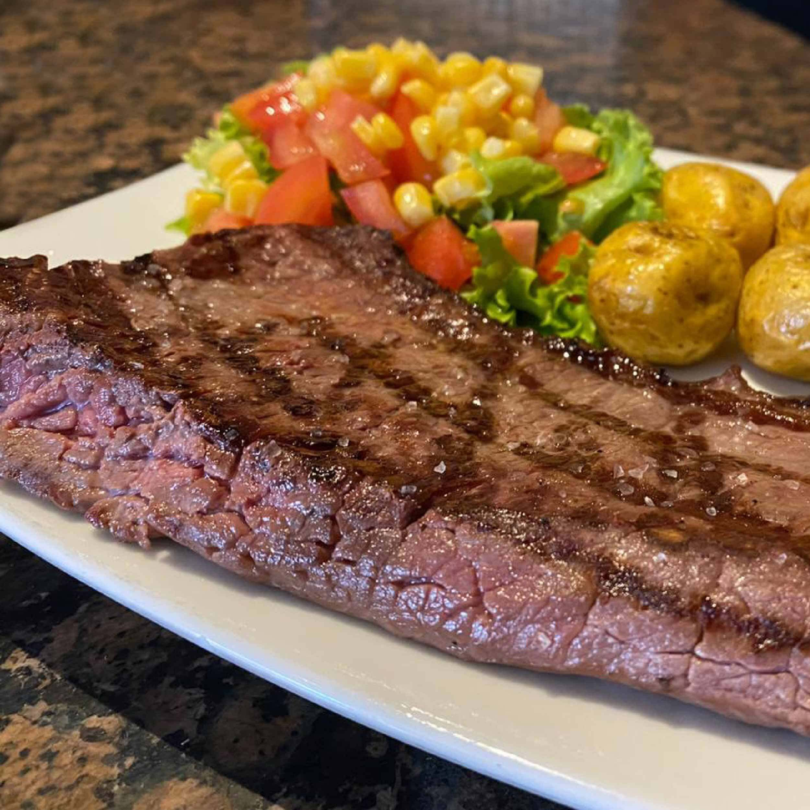

Punta de anca
La punta de anca es un corte que se obtiene del cuadril, es una carne muy tierna, ideal para consumir a la parrilla o al horno.
En esta receta la acompañaremos con un ají de aguacate colombiano delicioso.

Ingredientes
- 350 gramos de Punta de anca.
- 3 unidades de Aguacate.
- 1 unidad de Huevo.
- 1 unidad de Tomate rojo, 1
Cebolla blanca.
- Vinagre, Sal, Pimienta al gusto.
Como hacer punta de anca a la parrilla :
- Antes de realizar esta receta colombiana, el primer paso es alistar todos los ingredientes.
- Para el ají de aguacate, en una olla con agua hirviendo y vinagre, cocina el huevo por 15 minutos,
transcurrido este tiempo, pela el huevo y córtalo en trozos pequeños, resérvalos.
- En un bol, mezcla el aguacate macerado con el tomate sin cáscara y la cebolla cortados en cubos pequeños.
- Es momento de agregar el huevo, el ají tabasco, el zumo del limón, el cilantro cortado finamente, sal y pimienta,
mezcla todo muy bien para seguir con la elaboración del ají de aguacate
- Aparte, salpimenta los filetes de punta de anca, cubre con un poco de aceite y colócalos en una parrilla durante 5 minutos por cada lado.
- Finalmente, sirve la punta de anca a la parrilla y disfrútala con el ají de aguacate,
este plato es ideal para acompañar con papas a la francesa o asadas al horno.
pagina principal